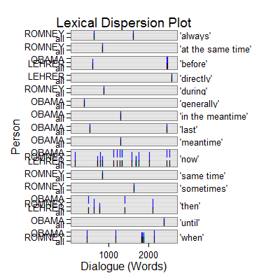

dc_timing(text.var, grouping.var, n.before = 1, tot = FALSE, n.after = n.before, ord.inds = TRUE, markup = c("<<", ">>"), name = "timing", ...)
TRUE condenses sub-units (e.g., sentences)
into turns of talk for that grouping.var.TRUE inds is ordered least to greatest.c("", "") to not mark the timing discourse
markers.termco.Returns returns a list of 2:
countsA termco object of timing discourse marker counts.
timingA trans_context object of timing discourse connectors in context.
Extract timing discourse connectors in context.
Kalajahi, S. A. R., Abdullah, A. N., Mukundan, J., & Tannacito, D. J. (2012) Discourse connectors: An overview of the history, definition and classification of the term. World Applied Sciences Journal, 19(11), 1659-1673.
out <- with(pres_debates2012[1:200, ], dc_timing(dialogue, person)) out[1]$counts person word.count timing 1 OBAMA 943 20(2.12%) 2 ROMNEY 1349 17(1.26%) 3 LEHRER 316 7(2.22%)out[2]$timing =================================== Event 1: [lines 25-27] ROMNEY: I believe in competition. ** OBAMA: Jim, if I if I can just respond very quickly, first of all, every study has shown that Medicare has lower administrative costs than private insurance does, which is why seniors are <<generally>> pretty happy with it. OBAMA: And private insurers have to make a profit. =================================== Event 2: [lines 31-33] OBAMA: And if you are going to save any money through what Governor Romney's proposing, what has to happen is, is that the money has to come from somewhere. ** OBAMA: And <<when>> you move to a voucher system, you are putting seniors at the mercy of those insurance companies. OBAMA: And over time, if traditional Medicare has decayed or fallen apart, then they're stuck. =================================== Event 3: [lines 32-34] OBAMA: And when you move to a voucher system, you are putting seniors at the mercy of those insurance companies. ** OBAMA: And over time, if traditional Medicare has decayed or fallen apart, <<then>> they're stuck. OBAMA: And this is the reason why AARP has said that your plan would weaken Medicare substantially. =================================== Event 4: [lines 35-37] OBAMA: And that's why they were supportive of the approach that we took. ** OBAMA: One <<last>> point I want to make. OBAMA: We do have to lower the cost of health care, not just in Medicare and Medicaid| =================================== Event 5: [lines 48-50] ROMNEY: Let's get back to Medicare. ** LEHRER: <<before>> we leave the economy| ROMNEY: Let's get back to Medicare. =================================== Event 6: [lines 52-54] LEHRER: All right. ** ROMNEY: If that's the case, <<then>> it will <<always>> be the best product that people can purchase. LEHRER: Wait a minute, Governor. =================================== Event 7: [lines 62-64] LEHRER: All right. ** LEHRER: So to finish quickly, briefly, on the economy, what is your view about the level of federal regulation of the economy right <<now>>? LEHRER: Is there too much? =================================== Event 8: [lines 67-69] LEHRER: This is not a new two minute segment to start. ** LEHRER: And we'll go for a few minutes, and <<then>> we're going to go to health care, OK? ROMNEY: Regulation is essential. =================================== Event 9: [lines 75-77] ROMNEY: Every free economy has good regulation. ** ROMNEY: <<At the same time>>, regulation can become excessive. LEHRER: Is it excessive now, do you think? =================================== Event 10: [lines 76-78] ROMNEY: At the same time, regulation can become excessive. ** LEHRER: Is it excessive <<now>>, do you think? ROMNEY: In some places, yes. =================================== Event 11: [lines 81-83] ROMNEY: No, it can become out of date. ** ROMNEY: And what's happened with some of the legislation that's been passed <<during>> the president's term, you've seen regulation become excessive, and it's hurt it's hurt the economy. ROMNEY: Let me give you an example. =================================== Event 12: [lines 105-107] OBAMA: The reason we have been in such a enormous economic crisis was prompted by reckless behavior across the board. ** OBAMA: <<Now>>, it wasn't just on Wall Street. OBAMA: You had loan officers were that were giving loans and mortgages that really shouldn't have been given, because the folks didn't qualify. =================================== Event 13: [lines 108-110] OBAMA: You had people who were borrowing money to buy a house that they couldn't afford. ** OBAMA: You had credit agencies that were stamping these as Aone great investments <<when>> they weren't. OBAMA: But you also had banks making money hand over fist, churning out products that the bankers themselves didn't even understand, in order to make big profits, but knowing that it made the entire system vulnerable. =================================== Event 14: [lines 115-117] OBAMA: We've going to make sure that you've got to have a living will so so we can know how you're going to wind things down if you make a bad bet so we don't have other taxpayer bailouts. ** OBAMA: <<In the meantime>>, by the way, we also made sure that all the help that we provided those banks was paid back every single dime, with interest. OBAMA: Now, Governor Romney has said he wants to repeal Dodd Frank. =================================== Event 15: [lines 116-118] OBAMA: In the meantime, by the way, we also made sure that all the help that we provided those banks was paid back every single dime, with interest. ** OBAMA: <<Now>>, Governor Romney has said he wants to repeal Dodd Frank. OBAMA: And, you know, I appreciate and it appears we've got some agreement that a marketplace to work has to have some regulation. =================================== Event 16: [lines 120-122] OBAMA: And so the question is: Does anybody out there think that the big problem we had is that there was too much oversight and regulation of Wall Street? ** OBAMA: Because if you do, <<then>> Governor Romney is your candidate. OBAMA: But that's not what I believe. =================================== Event 17: [lines 140-142] ROMNEY: It's hurt the housing market because Dodd Frank didn't anticipate putting in place the kinds of regulations you have to have. ** ROMNEY: It's not that Dodd Frank <<always>> was wrong with too much regulation. ROMNEY: Sometimes they didn't come out with a clear regulation. =================================== Event 18: [lines 141-143] ROMNEY: It's not that Dodd Frank always was wrong with too much regulation. ** ROMNEY: <<Sometimes>> they didn't come out with a clear regulation. ROMNEY: I will make sure we don't hurt the functioning of our of our marketplace and our business, because I want to bring back housing and get good jobs. =================================== Event 19: [lines 145-147] LEHRER: I think we have another clear difference between the two of you. ** LEHRER: <<Now>>, let's move to health care where I know there is a clear difference, and that has to do with the Affordable Care Act, Obamacare. LEHRER: And it's a two minute new new segment, and that means two minutes each. =================================== Event 20: [lines 158-160] ROMNEY: And and we've got to deal with cost. ** ROMNEY: And, unfortunately, <<when>> <<when>> <<when>> you look at Obamacare, the Congressional Budget Office has said it will cost dollar two thousand five hundred a year more than traditional insurance. ROMNEY: So it's adding to cost. =================================== Event 21: [lines 160-162] ROMNEY: So it's adding to cost. ** ROMNEY: And as a matter of fact, <<when>> the president ran for office, he said that, by this year, he would have brought down the cost of insurance for each family by dollar two thousand five hundred a family. ROMNEY: Instead, it's gone up by that amount. =================================== Event 22: [lines 174-176] ROMNEY: And the best course for health care is to do what we did in my state: craft a plan at the state level that fits the needs of the state. ** ROMNEY: And <<then>> let's focus on getting the costs down for people, rather than raising it with the dollar two thousand five hundred additional premium. LEHRER: Mister President, the argument against repeal? =================================== Event 23: [lines 176-178] LEHRER: Mister President, the argument against repeal? ** OBAMA: Well, four years ago, <<when>> I was running for office, I was traveling around and having those same conversations that Governor Romney talks about. OBAMA: And it wasn't just that small businesses were seeing costs skyrocket and they couldn't get affordable coverage even if they wanted to provide it to their employees. =================================== Event 24: [lines 189-191] OBAMA: They can't impose arbitrary lifetime limits. ** OBAMA: They have to let you keep your kid on their insurance your insurance plan <<until>> you're twenty six years old. OBAMA: And it also says that you're going to have to get rebates if insurance companies are spending more on administrative costs and profits than they are on actual care. =================================== Event 25: [lines 192-194] OBAMA: Number two, if you don't have health insurance, we're essentially setting up a group plan that allows you to benefit from group rates that are typically eighteen percent lower than if you're out there trying to get insurance on the individual market. ** OBAMA: <<Now>>, the <<last>> point I'd make <<before>>| LEHRER: Two minutes two minutes is up, sir. =================================== Event 26: [lines 194-196] LEHRER: Two minutes two minutes is up, sir. ** OBAMA: No, I think I had five seconds <<before>> you interrupted me, was the irony is that we've seen this model work really well in Massachusetts, because Governor Romney did a good thing, working with Democrats in the state to set up what is essentially the identical model and as a consequence people are covered there. OBAMA: It hasn't destroyed jobs. =================================== Event 27: [lines 196-198] OBAMA: It hasn't destroyed jobs. ** OBAMA: And as a consequence, we <<now>> have a system in which we have the opportunity to start bringing down costs, as opposed to just leaving millions of people out in the cold. LEHRER: Your five seconds went away a long time ago. =================================== Event 28: [lines 199-200] LEHRER: All right, Governor. ** LEHRER: Governor, tell tell the president <<directly>> why you think what he just said is wrong about Obamacare?plot(out)
## Save externally use .doc or .txt ## print(out[[2]], file="timing.doc")